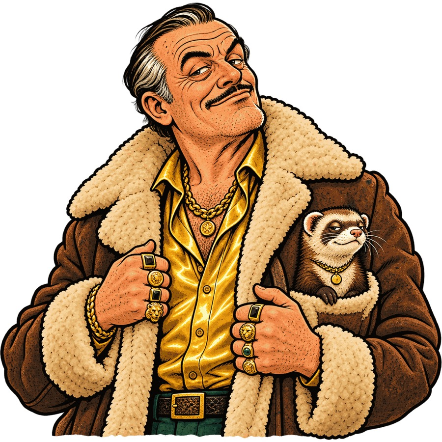

This is Doreen
Eighty-four years old, and for sixty of them she watched her husband Stan run the club from a deckchair on the touchline. Stan passed away in the spring. Since then the clubhouse has sat locked, and Doreen is worried she'll lose the house as well.

Then there's Bart
Stan's estranged brother has turned up out of nowhere, with a sheepskin coat, a ferret in his pocket and a solicitor, claiming the club should be his. He runs the club across town, and he'll follow you every step of the way.

Her proposal
She can't run it alone. If you take it on and bring your mates in, she'll be there every week in the mascot costume, same as always. Call it what you like and pick the badge, but it's still her and Stan's club underneath.

Stan's dream
Ten leagues stand between the Rec and the very top. Stan always believed his club could climb them. A story runs across ten seasons, with real heart, and plenty of laughs along the way.